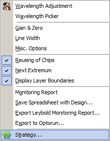
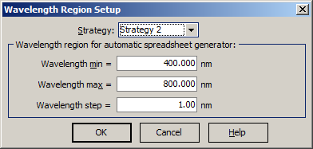
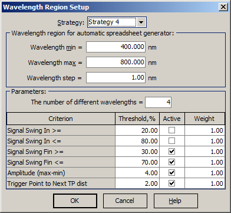
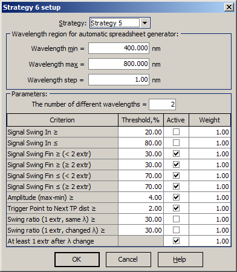

Automatic Monitoring Strategies
Automatic Monitoring Strategies
Navigation: OptiLayer Menu Commands > Results Menu > OptiLayer Monitor >
Automatic Monitoring Strategies
` <idh_monitor.html>`__ ` <idh_monitor.html>`__ ` <fixing_wavelength_of_some_laye.html>`__
It is possible to create a monitoring strategy using an automatic tool for this purpose. Automatic strategy generators are accessible through a special button in the OptiMonitor window.
These generators are also accessible using the right-click menu of the OptiMonitor window.

Strategy 1 is based on the choice of the most sensitive wavelength for each layer.
Strategy 2 aims at minimizing the cumulative effect of thickness errors.
Strategy 3 aims at minimizing the cumulative effect of thickness errors and takes into account additional requirements that are necessary in order to increase the robustness and reliability of real-time algorithms working with Optical Monitoring Systems.
Strategy 4 is an advanced strategy taking into account many criteria, with the ability to weigh different requirements and simultaneously minimize the number of different monitoring wavelengths.
Strategy 5 is an even more advanced strategy, considering some additional requirements compared to Strategy 4.
Details on the automatic strategies’ algorithms can be found in these papers:
A. V. Tikhonravov, M. K. Trubetskov, and T. V. Amotchkina, “Statistical approach to choosing a strategy of monochromatic monitoring of optical coating production,” Appl. Opt. 45, 7863-7870 (2006) http://www.opticsinfobase.org/abstract.cfm?URI=ao-45-30-7863
A. V. Tikhonravov and M. K. Trubetskov, “Elimination of cumulative effect of thickness errors in monochromatic monitoring of optical coating production: theory,” Appl. Opt. 46, 2084-2090 (2007) http://www.opticsinfobase.org/abstract.cfm?URI=ao-46-11-2084
A. V. Tikhonravov, M. K. Trubetskov, and T. V. Amotchkina, “Computational experiments on optical coating production using monochromatic monitoring strategy aimed at eliminating a cumulative effect of thickness errors,” Appl. Opt. 46, 6936-6944 (2007) http://www.opticsinfobase.org/abstract.cfm?URI=ao-46-28-6936

Note: Currently, strategies can be automatically generated both for the case of monitoring at a single witness chip and for multi-chip strategies.
For the first three strategies, the setup dialog is rather simple:

It is necessary to specify the allowed range for wavelength changes and the wavelength step that will be used for strategy generation. Computational time is dependent on this step; it should not be smaller than the accuracy of wavelength settings in the current monitoring device. For Strategy 4, the setup dialog is more complicated:

It is necessary to specify a number of additional criteria:
The number of different wavelengths (possible values range from 1 to 5). Since Strategy 4 is based on an exhaustive search approach, with a larger number of different wavelengths, computational time grows noticeably. On the other hand, strategies with the smallest number of different wavelengths are the most interesting ones.
Each of the following criteria can be activated or deactivated, and different weights can be assigned to every criterion.
Signal Swing In: lower and upper thresholds for the Input Swing value. The defaults are 20% and 80%.
Signal Swing Fin: lower and upper thresholds for the Final (output) Swing value. The defaults are 30% and 70%.
Amplitude (max-min): amplitude of the signal in the layer (distance between the signal maximum and signal minimum). If one or both of the extrema are not located inside the layer, they will be computed for the layer with an accordingly increased thickness. The default value is 4%.
Trigger Point to Next TP dist: the distance from the Trigger Point to the next Turning Point. For some monitoring devices, this is a quite important value and should not be too small. The default value is 2%.
For Strategy 5, the setup dialog has additional configuration settings compared to Strategy 4:

Additional criteria for Strategy 5 include:
Swing ratio (1 extr, same λ): the requirement for the ratio of output swing to input swing in the case of exactly one extremum of the signal inside the deposited layer and the monitoring wavelength staying the same.
STRONG>Swing ratio (1 extr, changed λ): the requirement for the ratio of output swing to input swing in the case of exactly one extremum of the signal inside the deposited layer and the monitoring wavelength changing.
At least 1 extr after λ change: the requirement to have at least one signal extremum in the layer after the monitoring wavelength change.